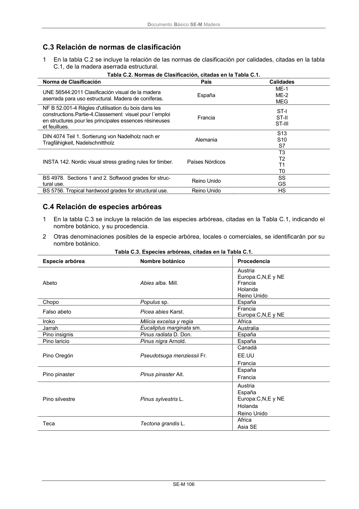

DB-SE-M Madera · edición 2019-12-20 · capa oficial
Documento DB-SE-M-oficial · SHA-256 del PDF 26b5819839ebfda78b0b119c5e76a0a37773b0d763c05688541870075df93718
Copia fiel del PDF fuente · Fuente oficial
Ficha de la disposición en la fuente oficial
Formatos: JSON del segmento · Markdown
C.4 Relación de especies arbóreas 1 En la tabla C.3 se incluye la relación de las especies arbóreas, citadas en la Tabla C.1, indicando el nombre botánico, y su procedencia. 2 Otras denominaciones posibles de la especie arbórea, locales o comerciales, se identificarán por su nombre botánico. Tabla C.3. Especies arbóreas, citadas en la Tabla C.1. Especie arbórea Nombre botánico Procedencia Abeto Abies alba. Mill. Austria Europa:C,N,E y NE Francia Holanda Reino Unido Chopo Populus sp. España Falso abeto Picea abies Karst. Francia Europa:C,N,E y NE Iroko Milicia excelsa y regia Africa Jarrah Eucaliptus marginata sm. Australia Pino insignis Pinus radiata D. Don. España Pino laricio Pinus nigra Arnold. España Pino Oregón Pseudotsuga menziessii Fr. Canadá EE.UU Francia Pino pinaster Pinus pinaster Ait. España Francia Pino silvestre Pinus sylvestris L. Austria España Europa:C,N,E y NE Holanda Reino Unido Teca Tectona grandis L. Africa Asia SE DocumentoBásico SE-M Madera SE-M 107
